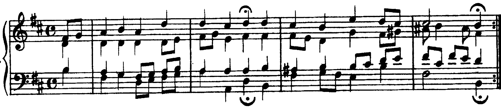
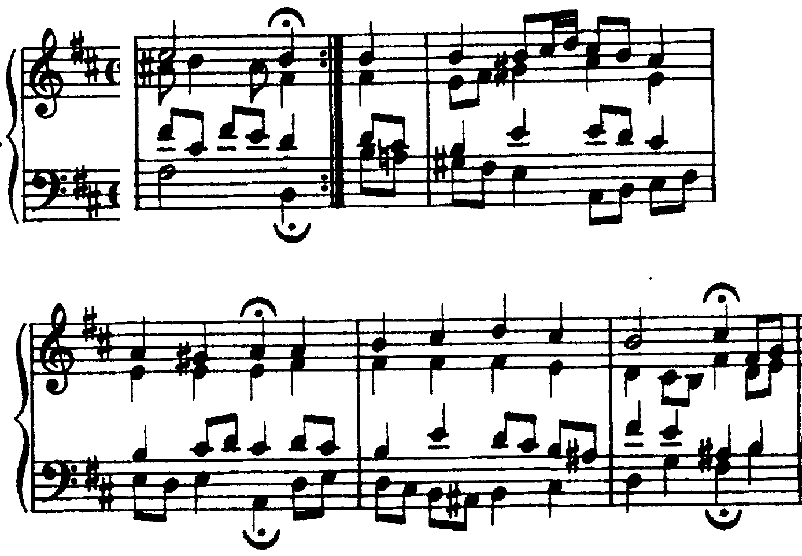

Toniche di passaggio
Nel corale BWV 103/6 tre frasi su sei si fermano fuori dalla tonica: ogni volta l’arrivo è preparato dalla sua dominante.
Essendo illusorio parlare di modulazione ad una tonalità che non ha neppure il tempo di esibire la propria tonica, la cifratura di re come II d.d. di do maggiore è senza dubbio la più convincente.
Carlo Marenco, Manuale d’armonia, p. 92
Riconoscere una dominante secondaria
B8La cadenza con quarta e sesta e la cadenza composta, pp. 288–289 · C10Ritardo e appoggiatura, p. 300
1. Le corone e le cadenze: su quale accordo si ferma ogni frase. 2. Le note estranee all’armatura e alla scala armonica: un diesis o un bequadro che sale è quasi sempre una sensibile secondaria. 3. L’accordo che contiene quella nota, e l’accordo dopo: se il primo è maggiore (o di settima di dominante) e il basso fa quarta su o quinta giù, il secondo è una tonica secondaria. 4. La cifratura nella tonalità d’impianto: V/III, V⁷/VII. Si parla di modulazione solo se la nuova tonica si afferma con una cadenza e altri accordi suoi (Marenco, Manuale d’armonia, p. 92).
La dominante del III (in si minore: la–do♯–mi, dominante di re–fa♯–la) è il VII della scala naturale: un accordo diatonico, senza alterazioni, che funziona da dominante secondaria. È lo stesso caso del I nel maggiore, che è già dominante del IV e diventa V⁷/IV solo con la settima abbassata (p. 92). La dominante del VII naturale, invece (mi–sol♯–si), ha bisogno del sol♯.
Cifrare la tonica secondaria come I di una nuova tonalità: alla b. 2 il re–fa♯–la è il III di si minore, non il I di re maggiore, perché due battute dopo la frase chiude in si minore.
Il corale e le sue sei frasi
BWV 103/6 chiude la cantata «Ihr werdet weinen und heulen» (1725). La melodia è «Was mein Gott will», la stessa del BWV 111/6 in la minore (U4). Le corone dividono il corale in sei frasi; tre si fermano sulla tonica o sul V di si minore, tre su un altro grado: il III (bb. 2 e 10) e il VII naturale (b. 6).

- ① b. 2: 1ª: III
- ② b. 4: 2ª: I
- ③ b. 6: 3ª: VII
- ④ b. 8: 4ª: V
- ⑤ b. 10: 5ª: III
- ⑥ b. 12: 6ª: I (terza piccarda)
| frase | battute | corona | preparata da |
|---|---|---|---|
| 1 | 0–2 | III (re–fa♯–la) | V/III, con la 6/4 cadenzale |
| 2 | 2–4 | I | V⁷ |
| 3 | 4–6 | VII (la–do♯–mi) | V⁷/VII, con il ritardo 4–3 |
| 4 | 6–8 | V | II⁴₃ e IV⁶: semicadenza |
| 5 | 8–10 | III | V⁷/III, con la 6/4 cadenzale |
| 6 | 10–12 | I con la terza piccarda | V⁷ |
Frasi 1 e 2: la dominante del III

- ① I
- ② b. 1: III⁶
- ③ b. 1: VI
- ④ b. 1: III
- ⑤ b. 2: III64
- ⑥ b. 2: V/III
- ⑦ b. 2: III
- ⑧ b. 3: V
- ⑨ b. 3: VI
- ⑩ b. 3: IV
- ⑪ b. 3: I
- ⑫ b. 4: V – V⁷
- ⑬ b. 4: I
La prima frase va subito verso il relativo maggiore: III⁶ e VI alla b. 1, poi alla b. 2 il basso la regge prima il re–fa♯ delle voci superiori (la 6/4 cadenzale di re), poi il la–do♯–mi e infine il re–fa♯–la sotto la corona. È una cadenza perfetta di re maggiore completa, 6/4–V–I; in si minore si cifra III⁶₄–V/III–III. Il la naturale non è un’alterazione: è il VII della scala naturale, e qui fa da dominante del III. La seconda frase riporta subito il la♯, sensibile di si minore: V alla b. 3, IV, I, e la cadenza perfetta V–V⁷–I della b. 4.
Frasi 3 e 4: la dominante del VII

- ① b. 4: I
- ② b. 5: V⁶/VII
- ③ b. 5: V/VII – V⁷/VII
- ④ b. 5: VII
- ⑤ b. 5: VII⁶
- ⑥ b. 6: V/VII (4–3)
- ⑦ b. 6: V⁷/VII
- ⑧ b. 6: VII
- ⑨ b. 6: III
- ⑩ b. 7: I⁶
- ⑪ b. 7: V65
- ⑫ b. 7: I
- ⑬ b. 7: VII⁶
- ⑭ b. 8: I⁶
- ⑮ b. 8: II43
- ⑯ b. 8: V
Alla b. 5 compare il sol♯, che non sta né nell’armatura né nella scala armonica di si minore: è la sensibile di la. Il basso sol♯ porta il V⁶/VII; poi la V/VII allo stato fondamentale diventa V⁷/VII con il re del soprano (la settima, che scende al do♯) e risolve sul VII al terzo movimento. La cadenza vera è alla b. 6: sul primo movimento il la del soprano, ripetuto dalla battuta prima, è la quarta sopra il mi del basso e scende al sol♯: un ritardo 4–3 preparato dalla stessa nota (libro C10, p. 300; è il movimento della quarta specie, U7 L5); il tenore aggiunge la settima re, e la V⁷/VII risolve sulla corona. Subito dopo il la–do♯–mi va al re–fa♯–la (b. 6, quarto movimento): letta in re maggiore, la successione mi–la–re è V/V–V–I, la cadenza della U7 L1. La quarta frase torna in si minore con la V⁶₅ (b. 7, la♯ al basso) e si ferma sul V: semicadenza, preparata dal II⁴₃ e dal IV⁶ della b. 8.
Sintesi
Una nota fuori dalla scala che sale di semitono è una sensibile secondaria; l’accordo dopo è la tonica secondaria.
La dominante del III è il VII naturale, senza alterazioni; quella del VII naturale ha il VI alzato (sol♯ in si minore).
Le toniche secondarie stanno alle corone: III, VII, III; la tonica d’impianto torna alla frase dopo.
Mercoledì 27/1, ora 48: il solfeggio cantato con la sensibile della dominante. La lezione si chiude con il solfeggio parlato, cantato e ritmico.
Compiti per la prossima volta
1 · Scritto: Un basso numerato di otto battute
Realizza il basso numerato a quattro parti.
Sul quaderno, a matita. La foto del lavoro finito va su Classroom. Nel Workbook: apri l’esercizio 7.2 ↗
Compiti per la prossima volta
2 · Solfeggio e 3 · dettato
n. 400 e n. 401 parlato · n. 402 e n. 403 cantato · n. 404 e n. 405 ritmico
Ogni pezzo a tempo, senza fermarti: il parlato a nomi, il cantato prendendo il primo suono dalla tastiera, il ritmico battendo la pulsazione.
Scrivi la melodia sul quaderno, in chiave di violino: otto battute in 6/8, do maggiore. Il primo suono è mi. Prima il riferimento, poi tutto due volte, ogni coppia di battute due volte, il collegamento 1–4, 3–6 e 5–8, e tutto per controllare.
Il riferimento: accordo di tonica e primo suono
Il dettato · otto battute
Le sezioni (riferimento, tutto, le coppie, il collegamento) si ascoltano una per una e si ripetono quanto serve; le fasi fanno la procedura della classe, con gli annunci e le pause, da qualunque punto.
Sul quaderno scrivi in testa la sigla C2-D-U07-L2. Si corregge all’inizio della prossima lezione.
Compiti per la prossima volta
Scrittura: contrappunto
Scrivi un contrappunto di terza specie (quattro note contro una) sotto il canto fermo, in modo misolidio (finale sol): undici battute. Comincia su una consonanza perfetta, alla cadenza la sensibile sale alla finale, niente quinte e ottave consecutive.
Sul quaderno, con la sigla C2-CP-U07-L2 in testa; la foto va su Classroom.
Testo per il registro elettronico
Scritto: Un basso numerato di otto battute (Workbook, esercizio 7.2), sul quaderno; la foto va su Classroom. Solfeggio dal quaderno di lettura: parlato n. 400, 401; cantato n. 402, 403; ritmico n. 404, 405 (a tempo, senza fermarsi). Dettato C2-D-U07-L2 dalla pagina della lezione (sezioni da ascoltare, o le fasi della procedura guidata), sul quaderno con la sigla. Contrappunto di terza specie sul canto fermo (C2-CP-U07-L2).
In classe
Leggiamo insieme: parlato
A nomi, a tempo, con la mano che batte. Chi si ferma riparte dalla battuta dopo.
Apri il n. 396 nel quaderno di lettura ↗ chiave di violino · 6/8
In classe
Leggiamo insieme: cantato
Si prende il tono dalla tastiera, si canta insieme; poi a gruppi.
Apri il n. 397 nel quaderno di lettura ↗ chiave di violino · 3/4 · fa maggiore
Apri il n. 398 nel quaderno di lettura ↗ chiave di violino · 3/4 · fa maggiore
In classe
Leggiamo insieme: ritmico
Tutti insieme, battendo la pulsazione. Poi a file, due battute a testa.
In classe
Cominciamo il compito: Un basso numerato di otto battute
Realizza il basso numerato a quattro parti.
Dieci minuti insieme sul quaderno, alla lavagna il primo punto; il resto è il compito per casa.